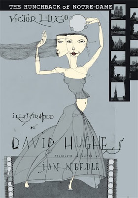
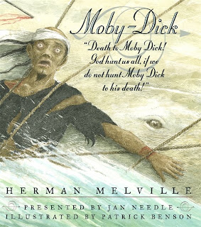
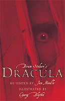

Ever since I started to fall in love with books as a kid, I began to dream of writing my own versions, or putting the characters into my own stories. I figured out quite soon that it meant I’d probably end up as a writer, and I was in fact first published at the age of eight. Before you reach for the laudanum, let me disinfest that statement. My father used to produce a weekly newsletter for the Portsmouth West Labour Party, and told me he was going to publish the novel I had started writing, which he’d found lying around the place. I was delighted, until the first chapter (all I’d written as it happened) appeared in the Labour Courier. It was on the front page, and he had not corrected my spelling. This, I quickly learned, was its USP. My spelling was hiliarious, and the comrades wanted more. It was almost enough to make a sensitive lad vote Tory! 
{kind=link}
I got my own back in a way that I was rather proud of – by refusing to write Chapter Two. It was something of a relief, in fact, because I’d made a key mistake for a novelist. At the end of chapter one my hero, a soldier returning from a war somewhere, had crossed a bridge not far from his house, and seen his wife and children waving in excited anticipation. Although it was set in the English countryside, a crocodile popped out of the stream at this point, and ate him. Dead hero – hard task for a novelist. When Richard Aldington stole my idea in Death of a Hero, he waited till the end. But then, he probably didn’t have a father to teach a lesson to.
Talking of lessons, I was a city boy, and only learned much later that very few Hampshire rivers harbour crocodiles, or even alligators or caimans. I’d also given ages to the soldier’s children which meant he must have written some extremely interesting letters home. Other lessons as a writer came later, but were almost as difficult to handle. I loved Enid Blyton, but wanted the Famous Five to be a bit less up themselves (that is, better off than me). I hated Biggles but wanted to write about daring blokes in aeroplanes biffing the boche. I absolutely utterly and completely adored William and wanted to be him, nothing more nor less, and I absolutely ditto the Arthur Ransome books. I had a hundred sequels in my head, and my career as a young millionaire was stretching out before me. Next Christmas, mother, no more California Poppy from Woolworths for you. This time it will come from Marks and Spencer, with a personalised bucket and stirrup pump.
My father got his own back for the cut-off novel by telling me about copyright. Buggeration. My career was in tatters. I had to end up as a journalist. I could still write short stories, yes – but no one would buy them, and if I mentioned William, Ginger, John or Titty (especially Titty, but that’s another story) I’d go to jail without collecting fifty pounds.
Attitudes change, and by the time I became a novelist and playwright, I rarely felt the desire to nick other people’s brainwork. But when I was asked by Caz Royds at Walker Books if I might contemplate doing a version of Moby Dick that might make it accessible to younger readers, I jumped on it like a dog on a great big juicy bone. Especially when she said Patrick Benson would do the illustrations. Unlike many so-called M-D fans, I’d actually read the book – not once, but possibly more than twenty times – and love it madly. Not reverentially though. Bits of it are so boring that they’d make a ‘younger reader’ weep, and lots of older readers too. (You’ll have noted the hyphen in M-D above, but not in Moby Dick. That’s a case in point. People can bore you to death just talking about the title, for God’s sake.) I cut it drastically, 
{kind=link}
Yes, I did the Hunchback, too, and translated it because I didn’t like the way other people had done it. Starting to read it (in English) was hard work, because I was about a quarter in before I realised what a fantastic story Hugo was writing (he got it under way very, very slowly), and because it was written for adults a couple of hundred years ago and I was charged to interest modern British teenagers. Hard work but worth every sweat-stained second of it. And Caz commissioned David Hughes to do the artwork and please, please have a look at it, even if you don’t want to buy the book: it’s brilliant enough to make you weep. I did a version of Dracula as well, and strangely, looking back on it, The Woman in White.
So, no longer an adaptation virgin by any means. I still hankered after having an in-depth love affair with some of my all time favourites, though, and have consummated one of them, at least. (More of my Dracula Lives ebook another time). I also felt the urge to revisit Ransome, and sketched in a novel about him (or Captain Flint) as a Russian spy. That houseboat, that ‘Rolling Stone,’ I ask you! But I was always told that his copyright guardians fought very hard and bloodily, and took no hostages. Wussier than Peggy Blackett on an off-day, I gave up.
A fellow blogger on this site, though – step forward Julia Jones – did not. I don’t know how hard she had to fight to do it, but she has written two books that could not have existed at all had it not been for Ransome and his various boats and crews. The first one is called The Salt-Stained Book, and I truly think Arthur himself would have offered it ten million cheers (at least). The second, of a trilogy, is called A Ravelled Flag, and I started it in bed last night and I sure ain’t going to stop. I’d need an academic essay to pin down what they’ve got to do with the Swallows and Amazons books, except everything, and maybe nothing. Julia owns one of Ransome’s boats herself, called Peter Duck, and I must of course declare an interest – I’ve sailed on her myself. But believe me, I gave up doing reviews years ago because I couldn’t bear to say so if I didn’t like a book, and I reviewed The Salt-Stained Book with joy.
I’ve got a postcard from Arthur Ransome, incidentally, and I’ve also enjoyed another of his boats, which became the Goblin in We Didn’t Mean To Go To Sea. I wrote to him when I was eleven. Didn’t tell him I wanted to write some sequels, though!
Jan Needle versions (Walker Books):
Dracula, illustrated by Gary Blythe. ISBN 978-1-4063-0581-4
Moby-Dick, illustrated by Patrick Benson. ISBN 978-1-4063-1744-2
The Hunchback of Notre Dame, illustrated by David Hughes. ISBN 1-84428-658-4
The Woman in White, illustrated by Anatoly Slepkov. ISBN 978-0-7445-5683-4
Julia Jones (Golden Duck):The Salt-Stained Book, illustrated by Claudia Myatt. ISBN 978-1-899262-04-5
A Ravelled Flag, illustrated by Claudia Myatt. ISBN 978-1-899262-05-2
Jan Needle ebooks:
Albeson and the Germans (86p)
http://www.smashwords.com/books/view/86960
My Mate Shofiq (86p)
http://www.smashwords.com/books/view/86957